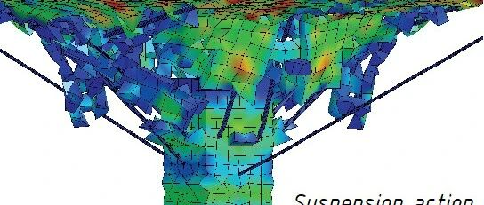

新论文：中柱失效后混凝土板柱结构承载性能影响因素研究

Journal of Structural Engineering
论文链接：
https://doi.org/10.1061/(ASCE)ST.1943-541X.0002757

【编者按】近年来国内外板柱结构连续倒塌事故不断被报道，引发了工程界对板柱结构体系工程可靠性和设计方法的担忧。从2015年起，清华大学、北京工业大学和澳大利亚格里菲斯大学在该领域开展了系列的合作研究，研究内容涉及约束板柱节点冲剪全过程的受力机理试验[1]、精细数值模拟方法[2]和冲剪后抗力计算理论，以及子结构的静动力连续倒塌机理试验[3-5]、精细和简化数值模拟方法[6]和动力效应规律，后继还将不断深化各方向的研究并陆续报道。
[1] Post-punching mechanisms of slab-column joints under upward and downward punching actions, Magazine of Concrete Research, 2019, DOI: 10.1680/jmacr.19.00217. (参见：新论文：不同冲剪方向下板柱节点抗倒塌性能研究)
[2] Simulation of punching and post-punching shear behaviours of RC slab–column connections, Magazine of Concrete Research, 2020, DOI: 10.1680/jmacr.19.00465. (参见：新论文：钢筋混凝土板柱节点冲切及冲切破坏后行为的数值模拟)
[3] Load transfer and collapse resistance of RC flat plates under interior column removal scenario, Journal of Structural Engineering-ASCE, 2018, 144(7): 04018087. (参见：新论文：中柱失效后板柱结构连续倒塌传力机理研究)
[4] Experimental study on the progressive collapse behaviour of RC flat plate substructures subjected to corner column removal scenarios, Engineering Structures, 2019, 180: 728-741. (参见：新论文：角柱失效后平板结构连续倒塌行为实验研究)
[5] Experimental study on the progressive collapse behaviour of RC flat plate substructures subjected to edge-column and edge-interior-column removal scenarios, Engineering Structures, 2020, 209: 110299. (参见：新论文：边柱以及边中柱失效后平板结构连续倒塌行为试验研究)
[6] Comparative and parametric studies on behaviour of RC flat plates subjected to interior column loss, Journal of Structural Engineering-ASCE, 2020, 146(9): 04020183.
研究背景
Law
钢筋混凝土板柱（无梁楼盖）结构在实际使用中各楼层的荷载大小可能存在差异，导致在板柱节点处产生集中力作用。当个别柱失效时，上层柱传来的力将在板柱节点处重新分配，可能进一步加大失效柱上节点所受的集中力作用，进而引起节点的脆性冲切破坏，触发大范围的结构连续倒塌。连续倒塌是整体结构的力学行为，因此需要基于子结构或整体结构进行研究。子/整体结构试验需要花费大量时间和经济成本，而借助有限元模拟可以进行参数化计算，全面、经济地分析结构的倒塌行为并探究其影响因素。本文借助LS-DYNA有限元软件采用数值分析方法模拟了中柱拆除情况下板柱子结构的承载行为，并研究了混凝土强度、板厚及受拉钢筋配筋率等主要设计参数的影响。
模型建立
Law
本文主要模拟了一2×2跨1/3比例的板柱子结构中柱失效倒塌试验（图1）。试验中在板面施加了5 kPa的均布荷载并在中间柱头上逐渐施加竖向位移。数值模型中的混凝土使用8节点实体单元模拟，钢筋使用2节点梁单元模拟，二者之间通过*CONSTRAINED_BEAM_IN_SOLID关键字相耦合并通过用户子程序考虑粘结-滑移的影响。在钢筋单元间加入接触作用（*CONTACT_AUTOMATIC_GENERAL）以模拟柱头钢筋在大位移阶段产生的悬挂效应。钢筋采用多段线弹塑性材料模型（*MAT_PIECEWISE_LINEAR_PLASTICITY），混凝土采用光滑封闭屈服面模型（*MAT_CSCM），并使用最大有效应变失效准则来实现混凝土的压碎剥落。

图1. 板柱子结构中柱失效倒塌试验
在混凝土开裂后，钢筋与混凝土间会产生相对滑移，其间的粘结力可表示为滑移量的函数，这个函数关系可由钢筋拔出试验得到。模式规范（fib Model Code for Concrete Structures 2010）中所给出的基本公式基于锚固长度较短的试验，反映未屈服钢筋的平均粘结力；而在锚固长度较长的拔出试验中，钢筋屈服会对粘结力产生较大影响。在板柱子结构试验中，节点附近的钢筋很快会进入屈服阶段，因此在模型中需加入此项影响。试验时发生冲切破坏后冲切区域外的板中钢筋状态与拔出试验接近（图2），因此可根据锚固长度较长的拔出试验来进行研究。拔出试验中的钢筋可划分为三段：已进入塑性的lp，尚处于弹性的le和还未受力的l0。对于弹性段的钢筋，可对其使用模式规范中给出的粘结-滑移关系，而对于进入塑性状态的钢筋，可假设其仅有残余粘结应力。由于单调加载试验中某处钢筋进入塑性状态时刻与其滑移量是唯一对应的，因此在模型中可以根据滑移量来判断其状态并赋予相应的粘结力。经过推导，钢筋屈服时的滑移量可由式（1）计算。

图2. 受拉钢筋的粘结-滑移行为

（1）
其中：参数C1和C2由式（2）和（3）确定；Es，εy分别为钢筋的弹性模量和屈服应变；db为钢筋直径；α，τbmax和s1分别是粘结应力增长系数、最大粘结应力及其对应的滑移。

（2）

（3）
最终建立好的有限元模型如图3所示。

图3. 有限元模型
模拟结果及参数分析
Law

图4展示了试验与模拟的荷载-位移曲线对比。试验中与模拟的最终破坏模式对比见图5和图6。可以看到试验中结构行为、板的开裂状态和中柱区域的破坏模式均可以较好地模拟出来。另外，不考虑钢筋与混凝土的粘结-滑移会得到前期过高的弯曲承载力及后期错误的结构行为。

图4. 荷载-位移曲线对比


（a）
(b)


（c）
(d)
图5. 最终破坏模式对比

(a)

(b)


(c)
图6. 中柱区域破坏模式对比
基于验证后的模型，研究了混凝土强度、板厚和受拉钢筋配筋率对结构倒塌行为的影响（图7）。可以看出前三个参数均对结构的前期受弯承载力有一定影响，但程度不同；而在冲切破坏后的拉薄膜效应阶段内，只有钢筋配筋率对承载力有较大影响。


(a)
(b)
(c)
图7. 混凝土强度、板厚和配筋率对承载力的影响
结论
Law
（1）在模拟结构连续倒塌行为时，应考虑钢筋与混凝土间的粘结滑移。
（2）混凝土强度与板厚对板的受弯行为有不同程度的影响，对冲切后承载力基本无影响。
（3）钢筋配筋率对受弯承载力和在冲切后的拉薄膜效应阶段内的破坏后承载力均有一定影响。

薛慧中
END
相关研究
新论文：抗震&防连续倒塌：一种新型构造措施
长按识别二维码，关注我们的科研动态